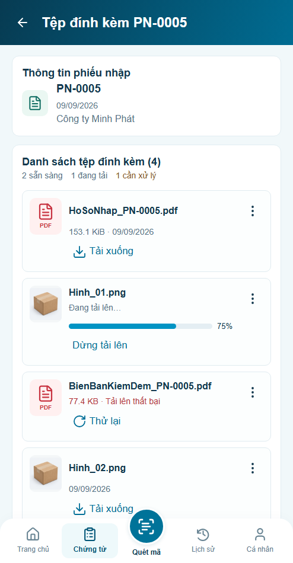
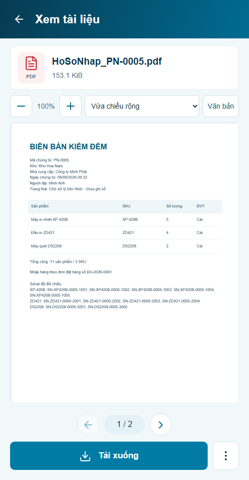
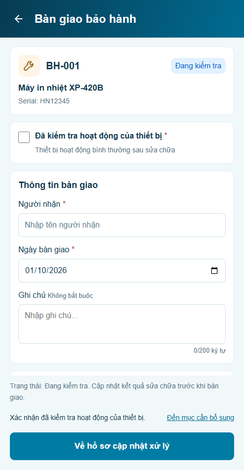
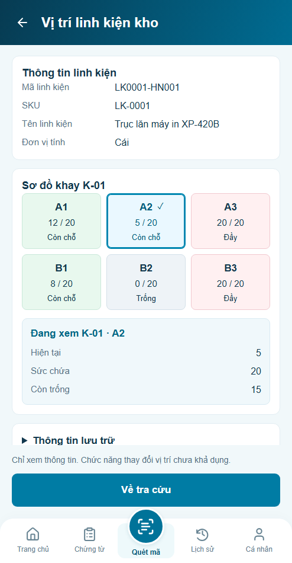

MOTION_P18 · Đính kèm / Bàn giao
4 panel × 3 mode đạt trong prototype · hình thức chờ reviewProgress≤100ms theo task; page fade140ms sau render; field/check nhẹ và selected outline140ms. Reduced/off giữ nội dung, quyền và số thao tác. Bàn giao/location chưa có policy mutation vẫn bị chặn.
Tải lại preview ·
Báo cáo ·
Operation / RAF / progress samplesminhanh / preview · mode ở công cụ Motion ngoài app. Trace thật: auto · OS reduced · off. Ảnh dưới là trạng thái đã settle, không phải bằng chứng60fps.
P18.S01 · Tệp đính kèm
Auto / OS không giảm OS giảm chuyển động
OS giảm chuyển động
Tắt motion
Trước / sau cùng điều kiện · auto
Trước Sau
Sau P18.S02 · Xem tài liệu
Auto / OS không giảm OS giảm chuyển động
OS giảm chuyển động
Tắt motion
Trước / sau cùng điều kiện · auto
Trước Sau
Sau P18.S03 · Bàn giao bảo hành
Auto / OS không giảm
OS giảm chuyển động Tắt motion
Tắt motion
Trước / sau cùng điều kiện · auto
TrướcSau
P18.S04 · Vị trí linh kiện
Auto / OS không giảm
OS giảm chuyển động Tắt motion
Tắt motion
Trước / sau cùng điều kiện · auto
Trước Sau
Sau 30test logic,18nhóm motion,51nhóm hồi quy liên quan và4viewport footer đạt. Geometry/text12/12 bằng trước;9/12ảnh raw bằng tuyệt đối,3ảnh chênh6–31pixel mép viền ở1/255 kênh màu. Không mask, không đặt threshold để tự nghiệm thu. Chi tiết đối chiếu · Profile quan sát.
Không thêm library/virtualizer, không deploy; giới hạn production/hardware và trạng thái nghiệm thu P18 cũ được giữ.